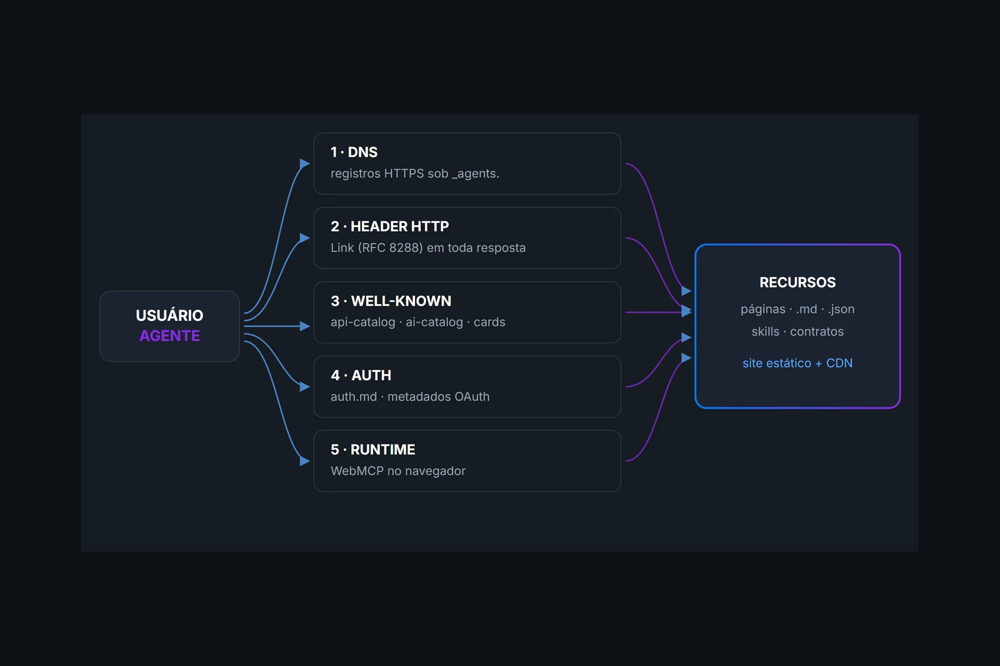
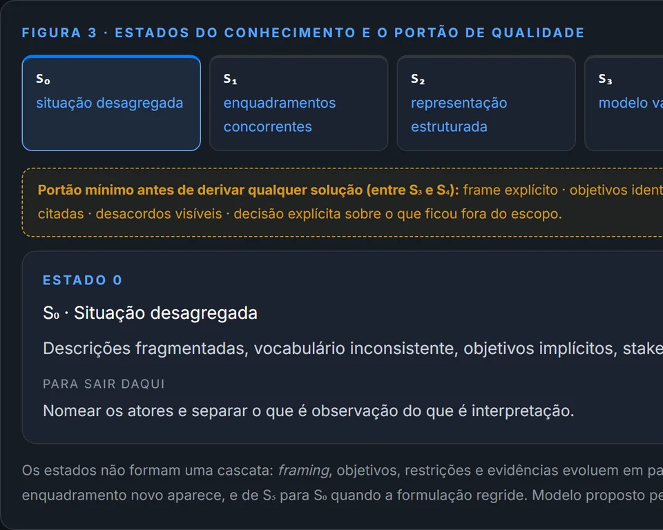
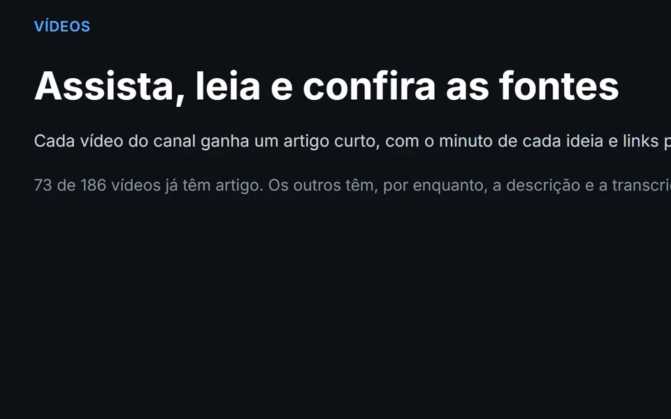
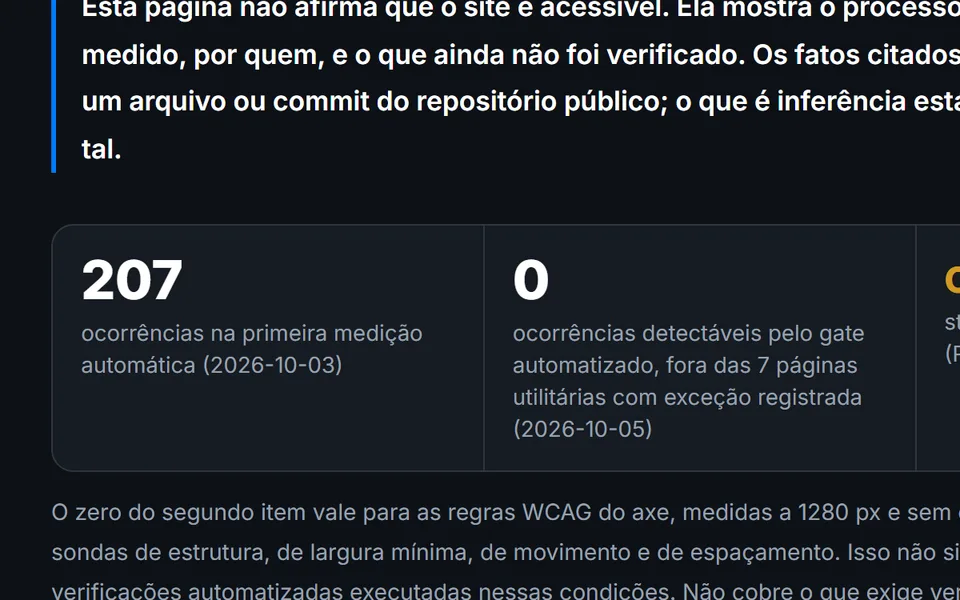
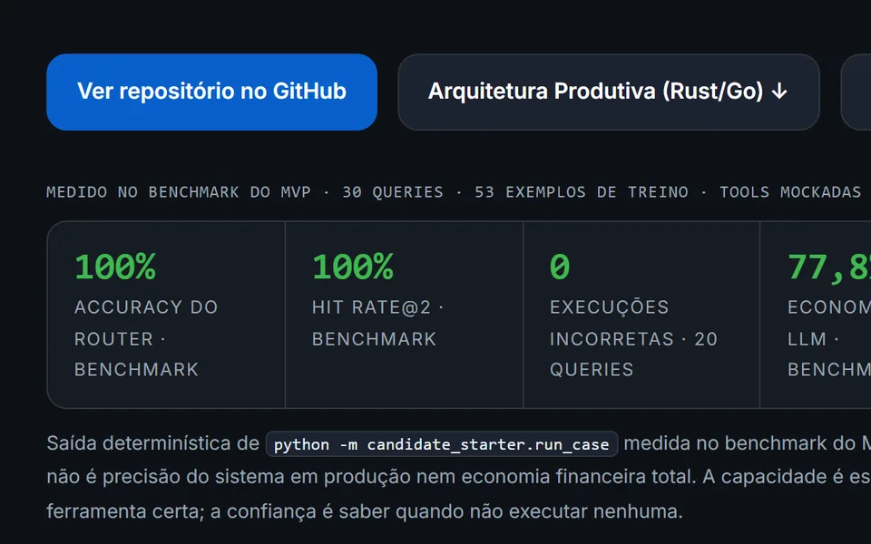
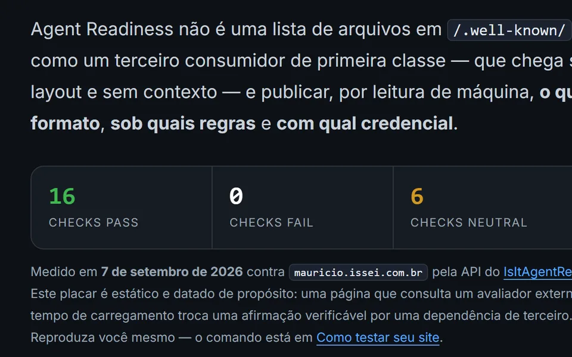
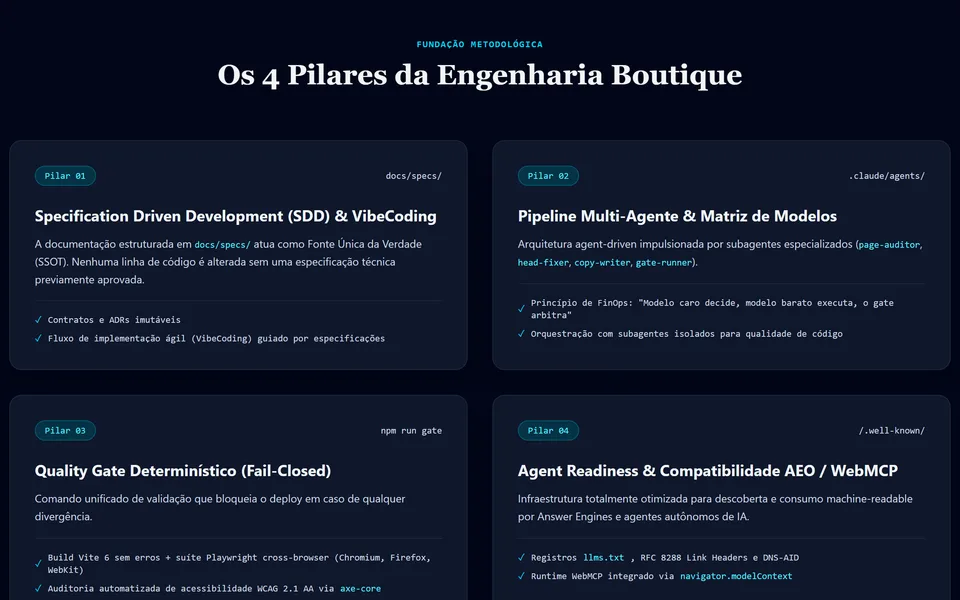

Maurício Yokoyama Issei
Da incerteza à especificação.
Da especificação à produção.
Engenharia de software, arquitetura em produção e agentes de IA.
Há mais de vinte anos levo o que foi desenhado até a produção e cuido para que continue rodando.

Como tirar do time o trabalho manual?
- Quem vai operar?Runbook · Plantão
- O que pode falhar?Incidentes · Logs
- Como saber se funciona?Aceite · Métricas
Só automatizo o que alguém consegue operar, ver falhar e medir.
Escutar · Investigar · Estudar
Quase tudo começa com uma pergunta. Antes de responder, desmonto a pergunta e estudo cada parte.
Sintetizar · Aprender
Depois fecho as fontes e explico do zero. É aí que separo o que entendi do que só li.

$ npm run gate
- build
- espelhos /en/ em dia
- artefatos gerados em dia
- coerência global do site
- orçamento de performance
Projetar · Construir · Validar
Desenho para que outra pessoa consiga operar. Construo em passos pequenos, e o teste diz se está certo.
- Incidente aberto
- Serviço estabilizado
- Causa raiz encontrada
Sustentar · Orquestrar · Evoluir
Na crise, o tempo conta. Com o time, primeiro estabilizo; depois investigo a causa raiz.
A causa vira a próxima pergunta.
Engenharia de Agentes de IA
/engenharia-agentes-ia.html
- O LLM é um componente, não o piloto
- Determinismo é invariante testável
- Separe o Cérebro da Vitrine
- Determinístico-primeiro
- Contratos rígidos em toda fronteira
- Isole as camadas epistêmicas
- Abrace o Mundo Aberto
- Governe o orçamento com ledgers
- Governança fail-closed
- Explique, não exponha o número
Integrar · Ensinar · Compartilhar
O que consigo explicar, publico. Ensinar consolida o que aprendi.
Minha história
Comecei escrevendo código. Com o tempo, passei a responder também por times, contratos e sistemas em produção.
- 1997:Curso técnico em processamento de dados
- 2003–2012:9 anos como Analista de Desenvolvimento na Sysgen
- 2012–2017:6 anos em Sustentação e Inovação na Indra
- 2018–hoje:8 anos em Sustentação e como Tech Lead na Rede
- 2024–hoje:Arquitetura, IA aplicada, engenharia de agentes e ensino
Minhas ideias
As ferramentas mudaram; as perguntas, não.
Hoje estudo agentes de IA perguntando o mesmo de sempre: quem vai operar, o que pode falhar, como saber se funciona. Escrevo e gravo o que ainda estou tentando entender.


Meus projetos
Da concepção à operação. Projetos que saíram do papel e que alguém usa. Em cada um, conto o problema e as decisões que tomei.
- Acessibilidade

Uma catraca no gate impede que a dívida de acessibilidade detectável volte a subir.
validar · sustentar
- Case Agents

Uma barreira de quatro camadas antes da execução, porque a tool errada não é uma aproximação aceitável.
investigar · projetar
- Agent Ready

Descoberta, formatos e contratos publicados para que agentes consigam usar este domínio.
construir · ensinar
- Boutique Empresarial

Site estático, especificação antes do código e um pipeline agêntico com gate determinístico.
projetar · orquestrar